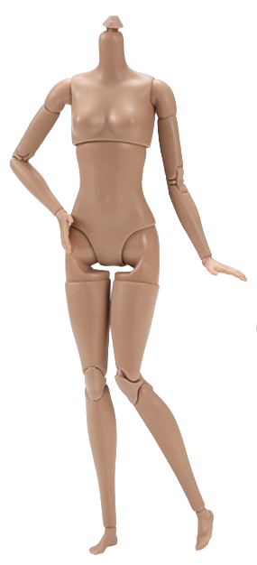
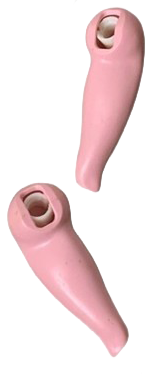
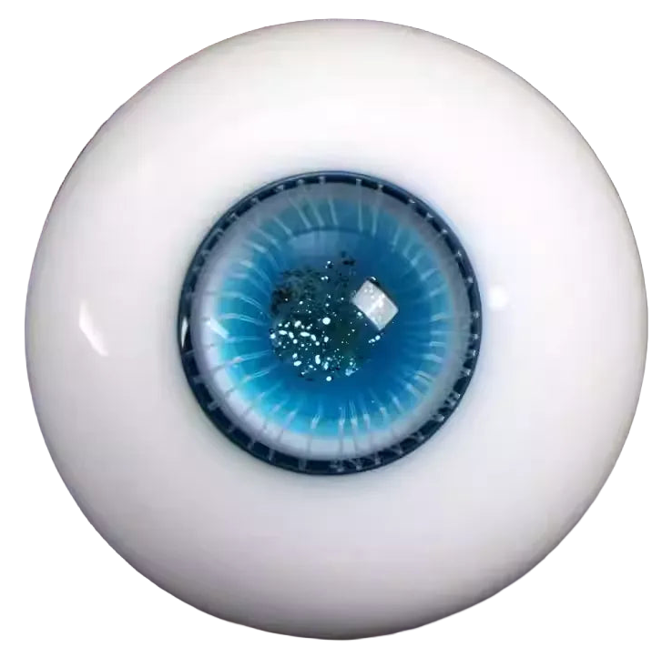
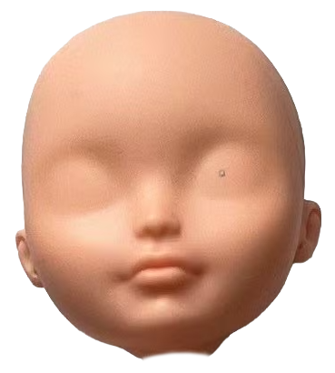
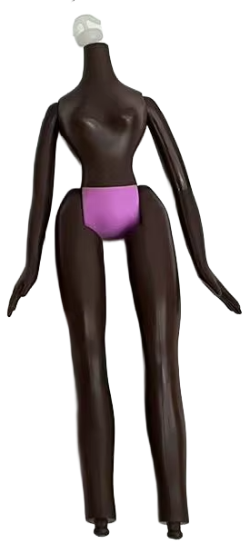
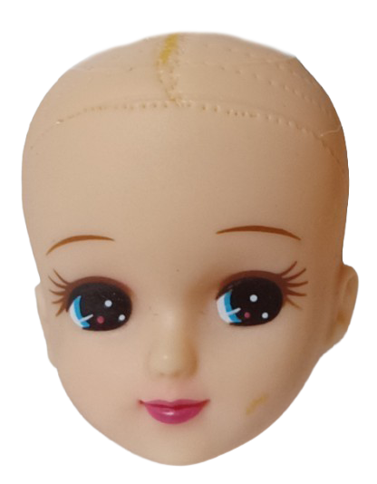
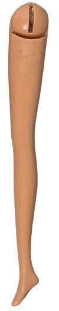
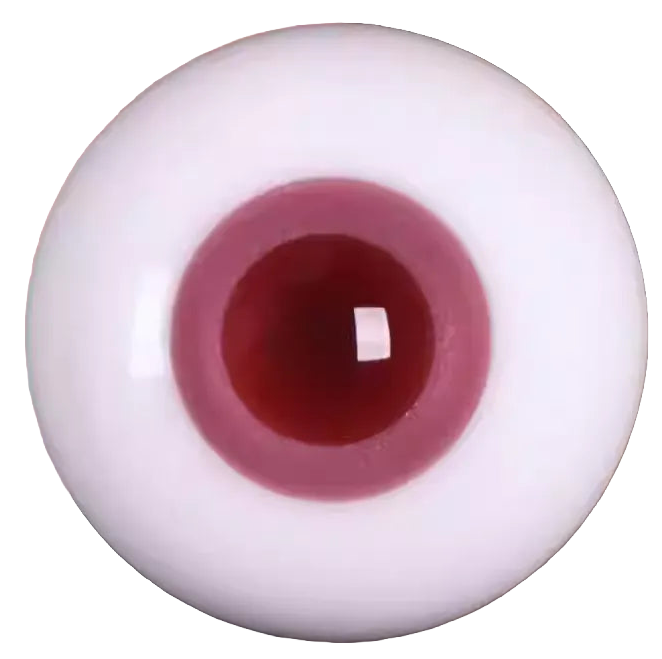

Monster High is one of the most popular dolls in the customization community. They offer unique skin tones, large eye surface for drawing, and an impressive variety of face molds.
Monster High is one of the most popular dolls in the customization community. They offer unique skin tones, large eye surface for drawing, and an impressive variety of face molds.



DOLLS


DOLLS



Ever After High is another popular doll line in the community and is easily distinguishable by their cute, rounded heads.


Because Barbies are hugely popular and still sold in stores, they're the easiest to find secondhand. Though their features are smaller and more realistic, their predominant sculpting make them great for beginner repaints.


Known for their large heads and exaggerated features, Bratz are perfect for expressive OOAK projects.


There are many online shops that sell larger BJDs (ball jointed dolls) specifically for people to customize. Usually, these larger dolls have greater articulation and holes in their heads for glass inset eyes. For a doll line like Smart Dolls, you can select their skintone, hair, and clothes directly from these stores or customize them yourself.

DOLLS

The Japanese Licca-chan doll line from Takara Tommy is relatively obscure in the U.S., but is my personal favorite.


a childhood obsession...